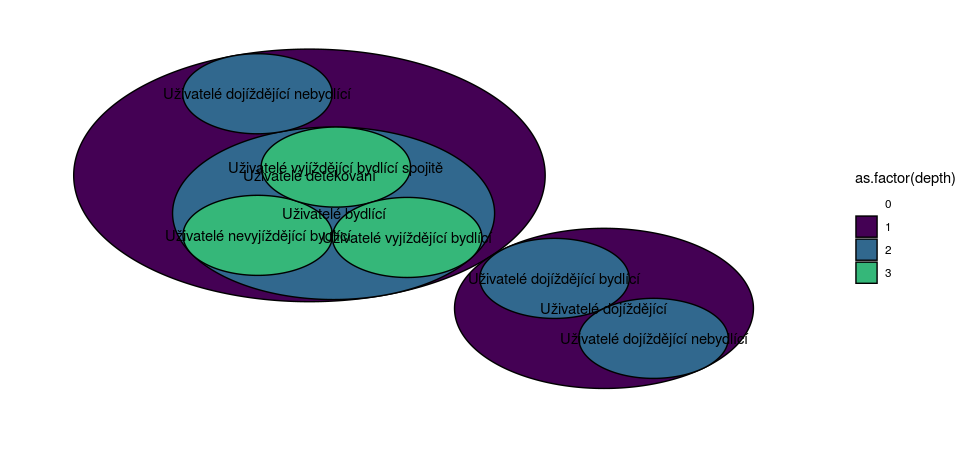
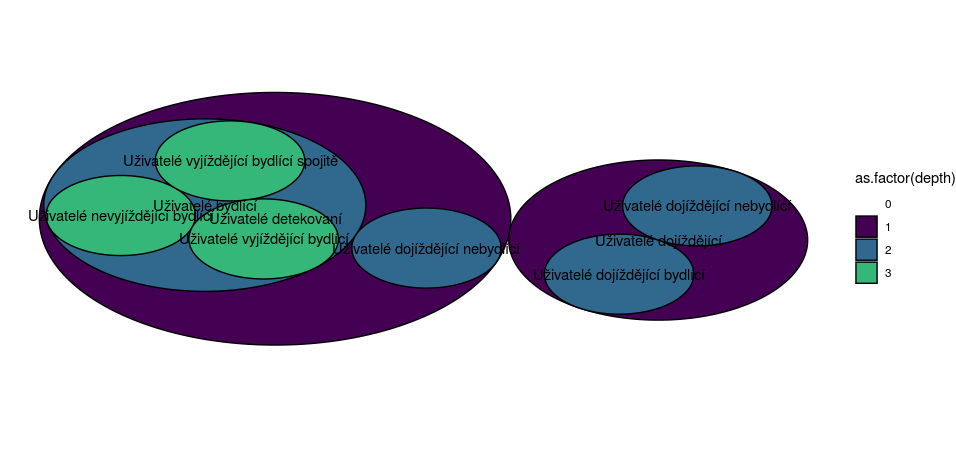
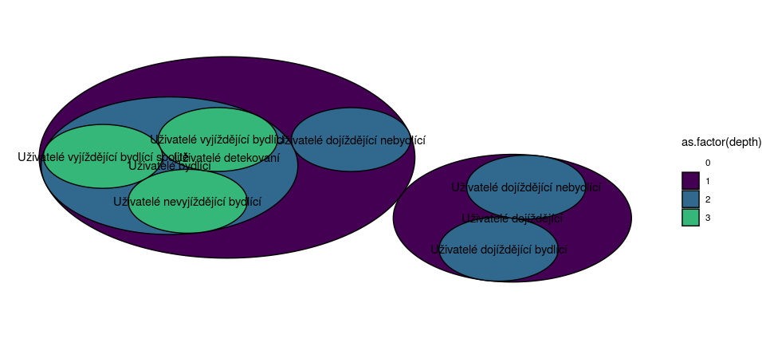

Chapter 5 Image imported
There is another solution than knitting the picture with knitr. It is to knit it before and then call it in the report. The script is the same than the one used in order to create the image within the knit. Then, another script is used in this Rmarkdown. Its goal is to call the image already done. It is a mix between LaTeX and HTML. I cannot print it because the chuck will begin with a backslash and it will create an error. Anyway, the result for the first row of the dataset for Venn Diagram is here:

The image dimensions are 956px for the width and 454px for the height. This is why the cercles seems flat comparing to those from the result within the knit.
When we try to compare the two images knitted, we can observe that the position of the circles are different. So, the comparison is more complicated than if they were in the same position. Below there is the image with the same position for the big purple circle than the first one. It will allow a better comparison. It was necessary to run many times the script in order to have this result.

As we can see, the circles have nearly the same sizes. It is a consequence of the low variance of the sizes of each group. I also add the result for the third row in order to be able to do many comparison and not just one. This time, another technique is used. It uses the R script “knitr::include_graphics(‘images/third.png’)”. It is this command which is always used for the html and the epub output because the LaTeX is not compatible.
